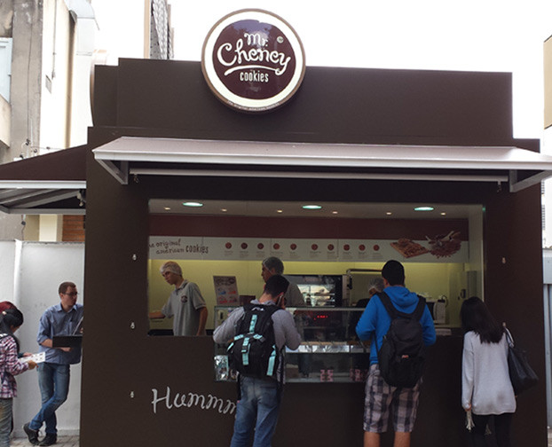

arrow_back

Mr. Cheney
O Mr.Cheney oferece os verdadeiros american treats, guloseimas americanas cheias de sabor e história. Tudo feito com matéria prima de alta qualidade para garantir o sabor original e deixar os clientes mais do que satisfeitos. Além dos deliciosos cookies, você também pode se deliciar com as panquecas com mapple syrup,brownie, apple pie, cinnamon roll, wraps e muito mais. Vale a pena conhecer, experimentar e se apaixonar.
Prédio: Quiosque 1 - Próximo ao Prédio 38
Telefone: (011) 3214-4005
Email: mackenzie@mrcheney.com.br